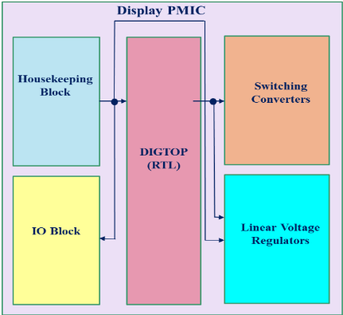
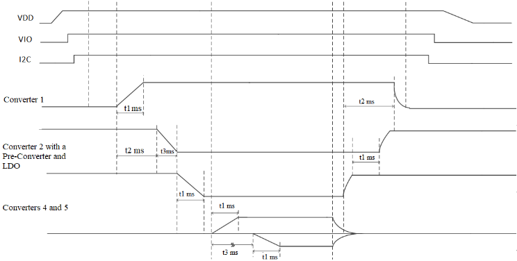
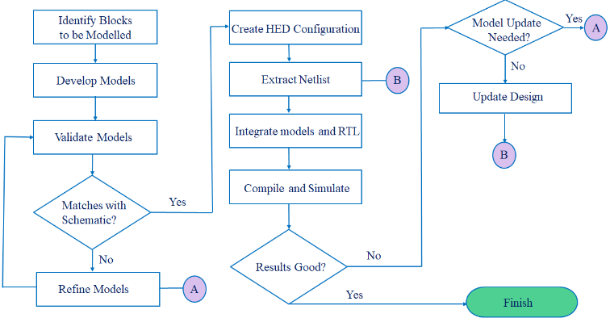
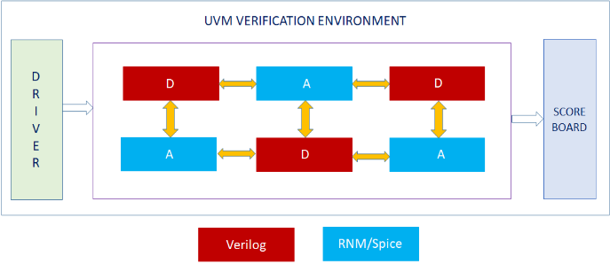
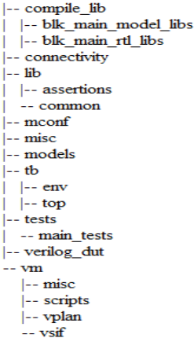
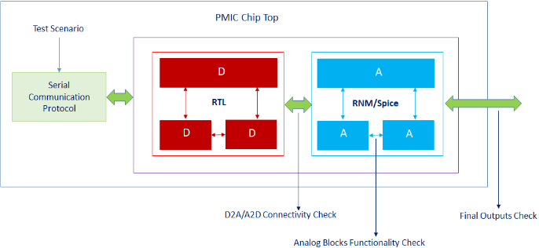
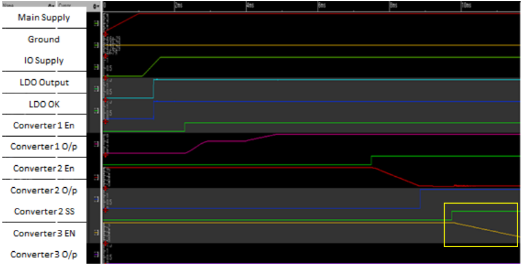

一种可配置、可复用的 UVM 环境耦合先进 Spice 仿真器，用于显示 PMIC 的模拟与混合信号（AMS）验证
论文面向一款为 OLED 移动显示面板供电的 Display PMIC，解决从基于 SystemVerilog Real Number Model 的 Digital Mixed-Signal（DMS）验证升级到晶体管级 AMS 验证时如何避免重建验证环境的问题。方法上，作者将原 DMS 的 UVM 环境（driver、scoreboard、SV/PSL 断言、I2C 协议模型）原样复用，按测试场景通过 mixed-signal configuration 将 housekeeping（VREF/IBIAS）、开关转换器等模拟模块从 SV-RNM 替换为 Spice 表示，插入 connect modules 完成 co-simulation，并借 Spice 仿真器多线程与选项调优折中精度与 runtime，同时把供电激励改为缓升 ramp 以规避收敛问题。该流程以硅精度验证了上电/掉电时序、I2C 读写改变上电顺序、各阶段电流与容性负载效应，发现并修复了转换器输出阻尼纹波、vector 引脚错接导致电流分配错误等关键 bug，流片后仿真数据与硅实测匹配，实现一次流片成功。对团队而言，其跨验证模式的环境复用与 silicon correlation 闭环有方法学借鉴价值，但 AMS/Spice 部分超出数字 IP 前端范畴。
一款用于 OLED 移动显示面板供电的 Display PMIC 此前仅完成基于 SV-RNM 行为模型的 Digital Mixed-Signal（DMS）验证，缺乏晶体管级精度。论文要解决的问题是：如何在不重建验证环境的前提下，将既有 UVM 环境复用到 Spice 级的 Analog Mixed-Signal（AMS）验证，对上电/掉电时序、I2C 寄存器读写、DVS、保护逻辑等关键场景获得硅精度验证结果，并暴露 DMS 仿真无法发现的设计问题。
核心是 DMS→AMS 的 UVM 环境无缝复用：保持 driver、scoreboard、断言、I2C 协议模型与目录结构（compile_lib/lib/models/tb/tests）不变，仅按测试场景通过 mixed-signal configuration 将部分或全部模拟模块（housekeeping 的 VREF/IBIAS、开关转换器、IO blocks）从 SV-RNM 替换为 Spice/TL 抽象，由仿真器插入 E-L-R connect modules 完成 A2D/D2A 转换；利用先进 Spice 仿真器的 multi-threading 能力与选项调优折中精度与 runtime；针对 Spice 仿真将供电激励改为缓升 ramp 以避免收敛问题；按应用电路添加感性/容性负载，并通过模拟控制文件隔离模拟侧修改，避免改动 SV testbench 以实现最大复用。
发现并修复两个关键设计 bug：converter 3 输出出现阻尼纹波（dampening ripple）；housekeeping 块 <1:2> vector 电流引脚误接标量引脚导致电流分配不当、转换器输出电压偏低
上述问题在流片前于 schematic 中修复，实现 first-pass silicon success
流片后 UVM-AMS 仿真的电压/电流数据与硅实测数据匹配，验证了流程置信度
以硅精度完成上电/掉电时序、通过 I2C 寄存器编程改变默认上电顺序（先 enable converter 4/5 再 1/2/3）、各阶段 supply current 均在规格限内、de-rated 电容负载下 converter 3 稳定到接近终值的预期行为等场景验证
环境复用带来 setup 上 near zero transition time 的收益；但论文未给出具体量化数据（如 runtime 数值、回归规模、覆盖率数字），严格意义上的量化指标为 未在论文中说明
相对其引用的既有 DMS 验证流程，主要区别在于：同一套 UVM 环境、用例与 scoreboard 无需重建即可从 SV-RNM 的 DMS 仿真切换到 Spice 级 AMS co-simulation，实现 near zero transition time；提出按测试场景定制 mixed-signal configuration 的配置策略（哪些模块用 Spice、哪些保留 SV-RNM），例如为保证转换器效率必须将 housekeeping 块与转换器同时置于 Spice 以避免 connect modules 引入电流误差；并给出 AMS 仿真结果与硅实测数据相关性验证的闭环。
相关度级别：medium
命中能力域：2.4 设计验证方法学 | 2.7 EDA/验证自动化与 AI 辅助
理由：论文核心是 UVM 验证环境在 DMS→AMS 间的可配置复用，属于 2.4 中 UVM/SystemVerilog 验证平台与验证环境组织（base test/base sequence、scoreboard、断言、目录框架）的直接实践；其可复用环境框架与 I2C 协议模型也触及 2.7 的可复用验证 IP/框架。但论文技术重心（SV-RNM 到 Spice 替换、connect modules、Spice 收敛与多线程调优）面向模拟/混合信号 PMIC 验证，团队作为 LPDDR/HBM4/UCIe 等数字 IP 的前端架构/RTL/DV 团队不涉及 Spice 级 AMS 仿真，故判为 medium：方法有借鉴但不直接命中团队技术栈。
建议动作：作为方法参考存档
摘要—本文将讨论针对一款专为OLED手机显示面板供电而设计的电源管理芯片（Power Management IC, PMIC）所开展的基于UVM的模拟与混合信号（Analog and Mixed-Signal, AMS）验证。此前，验证的重点是使用SystemVerilog实数模型（SystemVerilog Real Number Model, SV-RNM）进行数字混合信号（Digital Mixed-Signal, DMS）验证，以覆盖PMIC的多种场景，例如基本的上电与下电时序、I2C写与读事务、动态电压调节（Dynamic Voltage Scaling, DVS），以及针对各种故障场景对PMIC保护逻辑的测试。本文中，我们介绍了如何通过将基于UVM的验证环境从DMS复用到AMS，对上述DMS项目的一个子集执行AMS验证。我们展示了通过运行AMS仿真而得到精确验证的一些关键测试场景，介绍了为不同场景创建的不同混合信号配置，并描述了如何借助所采用的验证方法学发掘出关键的设计问题。我们还说明了能否将UVM-AMS验证得到的仿真数据与实际硅片数据相关联，从而对所执行的验证建立信心。
电源管理在当今的系统级芯片（SoC）中已不可避免，低功耗高性能芯片已成为存储、存储器、接口、显示、电池管理等各类应用领域的常态。有鉴于此，电源管理集成电路（PMIC）的设计、验证与采用的必要性无需赘言，因为如今几乎所有以模拟为核心的集成电路（IC）中，PMIC都已成为必备组件。本文所讨论的PMIC面向显示应用，用于为OLED移动显示面板[3]、摄像机、数码相机和多媒体播放器供电。它由高效率开关变换器和低压差线性稳压器（LDO）组成。除这些关键模块外，该PMIC还包含以下模块：(a) 用于产生时钟的高频振荡器（HFO），主要用于触发数字逻辑；(b) 辅助电路，例如基准电压（VREF）发生器、偏置电流（IBIAS）发生器、IO单元、ESD保护单元、焊盘环等。
芯片中有一个核心数字模块，用于驱动各变换器及其他模拟模块的使能信号。所有变换器均实现输入到输出隔离，内置整流器，具备TR分段控制（TSC）功能，并设计为由单节锂离子电池和充电器供电。数字模块内部的寄存器组（进而包括变换器的输出）可通过I2C串行通信协议进行编程。传统上，其他芯片的寄存器组通常只使用单一从机地址，而这款PMIC则具有两个从机地址，每个从机地址各自对应一套寄存器组。其中一组寄存器可通过I2C协议利用串行时钟线和数据线进行编程，而另一组寄存器则可通过另外一组独立的信号线进行编程。一个GPIO输入决定使用哪一组信号线进行I2C读写。
该PMIC的框图架构如下一页所示。

由于芯片中存在这类中等至高灵敏度的模拟模块，PMIC的正常上电和下电顺序将遵循特定的次序，并具有如下方时序图所示的软启动时间和延迟时间。变换器1首先上电，随后变换器2（连同前置变换器，即变换器3和一个LDO）自动使能，之后再使能变换器4和变换器5。下电时则遵循对称的顺序。然而，变换器4和变换器5也可以在完全未使能变换器1的情况下被使能并开始爬升。通常，在由显示驱动接口（DDI）控制的正常启动顺序下，变换器1总是在所有其他变换器之前上电。

该PMIC验证的初始部分，即数字混合信号（Digital Mixed-Signal, DMS）验证，是按照[6]中所述的流程执行的，如下方流程图所示。我们从PMIC芯片顶层（chip-top）的原理图出发，创建了一个混合信号配置，其中将所关注的模块绑定为使用模拟行为模型（analog behavioral model, ABMOD），即对耗时较长的模拟模块采用SystemVerilog实数建模（SystemVerilog real-number modelling, SV-RNM）[4][5]。随后，我们提取了该配置的网表，并将其与数字模块的RTL代码以及为模拟模块开发的SV-RNM模型一起，使用纯事件驱动的逻辑仿真器对设计进行编译和仿真。我们借助仿真器提供的相应连接模块（connect module）处理了实数到逻辑（Real-to-Logic, R2L）和逻辑到实数（Logic-to-Real, L2R）的转换[12]。在将模拟模块的模型用于DMS验证之前，我们还使用公共测试平台（testbench）将其与各自的原理图进行了验证[7][9]。

在完成验证计划中所有条目的DMS（数字混合信号）验证之后，我们从中确定了需要验证的条目子集，通过复用先前用于DMS验证的基于UVM（通用验证方法学）的验证环境，在AMS（模拟混合信号）中对其进行验证。我们基于UVM的验证环境的高层示意图如下所示。可以看到，该环境包含三个关键组件，即被测设计（DUT）、驱动器（driver）和记分板（scoreboard）。该DUT由设计中的模拟部分和数字部分组成，在DMS验证期间，所有模拟模块均以SV-RNM（SystemVerilog实数建模）模型的形式进行验证[8]；而在AMS验证中，则将选定的或全部模拟模块以Spice的形式进行验证。最初，存在这样的场景：有选择地将DUT中的部分模拟模块确定为Spice模块，而其余模块则保持为SV-RNM模型不变。这就引入了协同仿真（co-simulation），因为逻辑仿真器和晶体管级（TL）仿真器同时参与其中，并且由仿真器插入连接模块（connect module）来处理不同数据类型信号之间的转换，即电气-逻辑-实数（E-L-R）转换。

我们所使用的UVM验证环境的高层目录结构如下所示。compile_lib目录保存了所有SV-RNM模型以及数字模块RTL代码的编译快照。lib目录包含我们可添加的SV/PSL断言，用于在验证过程中报告通过/失败（pass/fail）状态；还包含一些关键的UVM文件，例如基础序列器（base sequencer）、基础包（base packages）、基础测试（base test）等，这些文件对于任何PMIC验证都是标准配置，并在所有测试场景中通用。这些文件通常包含基本序列，例如DUT上电、使能复位释放等。models目录用于存放我们为确定需要建模的模拟模块所创建的所有SV-RNM模型。接下来是最重要的tb目录，它包含两个子目录，即top和env。顾名思义，top主要包含实例化DUT的顶层测试平台（testbench）文件，同时还实例化了用于寄存器读写的I2C模型（通信协议）。该目录中还有一个文件，用于在UVM测试用例中访问设计对象（如引脚）时，提供通信协议与这些设计对象之间的虚拟接口（virtual interface）。env包含所有UVM环境文件，例如定义通信协议的模型文件、PMIC的记分板、接口的定义与实例化，以及一个可包含各测试用例中常用任务（task）的文件。tests目录包含我们按照验证计划文档编写的UVM测试用例文件，用于验证各测试场景。verilog_dut包含数字模块的RTL文件。

在下图中，我们放大展示了显示PMIC芯片的顶层，即我们的被测设计（DUT），其中显示了构成验证活动一部分的一些关键方面。我们将模拟模块的功能检查作为最首要的要求来执行，同时还覆盖了D2A与A2D连接性检查。这些是为确保数字顶层模块与各个模拟顶层模块之间的引脚连接符合预期而进行的静态检查。待验证的测试场景通过串行通信协议以UVM测试用例的形式传入。借助该UVM测试用例，我们写入所需的串行时钟和数据线（或由GPIO输入决定的单独一组线路），对数字部分中的寄存器进行编程，从而启用验证所需的设计配置。

根据需要在AMS中验证的测试场景，我们将部分或全部模拟模块从其SV-RNM模型替换为等效的Spice/TL抽象，具体如本文后续章节中的表I所述。这种混合信号配置使得我们有必要采用先进的Spice仿真器来仿真Spice部分。我们还利用了Spice仿真器中提供的多线程（或多CPU）能力来获得性能提升（以运行时间衡量）[10]。因此，我们在Spice模块与数字模块之间插入适当的连接模块来实现A2D和D2A转换[11]，并以此方式运行AMS协同仿真。
下面列出了我们将UVM验证环境从DMS复用到AMS所获得的一些关键收益：
将模块从其SV-RNM表示替换为Spice表示并运行AMS仿真，其代价是仿真运行时间（性能）的增加。然而，通过运行AMS仿真获得具有硅片精度的黄金结果所带来的巨大收益，远远超过了这种对仿真性能的影响。
在针对I2C读写、上电/下电时序、保护/中断、动态电压调节（DVS）以及连接性检查等各种功能场景完成了上述PMIC的DMS验证之后，出现了通过以Spice表示对部分关键模拟模块进行仿真来执行AMS验证的需求。我们确定的需在AMS中进行验证的项目如下所列。
上电与下电时序：对于任何PMIC而言，在AMS中需要验证的首要场景就是默认的上电和下电时序。我们在图2中看到了我们的PMIC所要实现的基本电源时序。对该时序的验证不仅包括验证开关变换器的电压调节值，还包括检查是否满足时序规范。由于我们将DMS验证环境复用于AMS，因此需要在激励中纳入某些更改。其中一项必要的更改是在电源上引入斜坡。对于DMS验证，由于我们使用的是逻辑仿真器，让电源在逻辑意义上从低电平直接变为高电平而不涉及斜坡是可以的。然而，在使用Spice仿真器的AMS仿真中，电源线上这种突然的跳变会导致仿真出现收敛问题。因此，复用环境中的第一项更新就是让主电源从零缓慢斜坡上升至其最终值（因此测试用例的持续时间会因这种斜坡而略有增加）。然而，这一步同样必须在运行时间与收敛性的权衡上仔细平衡，因为如果斜坡过陡（或斜坡过缓），仿真将花费大量时间才能完成上电过程。这进而会影响整体的验证周转时间。通过使用最优的Spice仿真器选项和多线程特性，我们在运行AMS仿真时还能够获得正确的精度与性能权衡。
针对该场景的混合信号配置，我们首先将辅助管理模块（housekeeping blocks，由VREF和IBIAS发生器组成）从其SV-RNM表示替换为各自对应的Spice抽象。这一步势在必行，因为我们计划将部分或全部开关变换器保留在其Spice抽象中（取决于测试用例，如下所示），而当开关变换器保留在Spice中时，由辅助管理电路提供给变换器所需的VREF和IBIAS值就必须准确。如果将辅助管理模块保留为SV-RNM模型，则会在这些模型与Spice之间插入转换元件（或连接模块），这可能导致流经该路径的电流不准确。这进而会影响开关变换器的效率，从而导致稳压电压值下降。下表展示了属于该验证场景的各种测试用例的混合信号配置。
由于开关变换器位于Spice中，还有必要根据PMIC规格文档中提供的应用电路，为变换器添加所需的感性负载和容性负载。
| S.no | Test Case | Blocks in Spice | Blocks in SV-RNM |
|---|---|---|---|
| 1 | Power-on/off sequence with selection of serial clock and data lines by GPIO | - Switching converter 1 - Housekeeping blocks | - Switching converters 2 to 5 - IO blocks - Miscellaneous blocks |
| 2 | Altered power-on/off sequence with selection of separate set of lines by GPIO | - Switching converters 1 to 5 - Housekeeping blocks - IO blocks | - Miscellaneous blocks |
| 3 | Power-off using main supply and IO block supply ramp down | - Switching converter 1 - Housekeeping blocks - IO blocks | - Switching converters 2 to 5 - Miscellaneous blocks |
| S.no | Test Case | Blocks in Spice | Blocks in SV-RNM |
寄存器写入与读取操作：在通过确保默认的上电-断电序列验证了PMIC在AMS中的基本操作之后，下一项任务是检查Spice中的模拟模块是否会对RTL中编程的寄存器值的变化做出响应。这一行为当然需要得到保证，因为可能存在更改默认上电序列的需求，例如在使能变换器1、2和3之前先使能变换器4和5（请注意，如第1节所述，这是一种可能的场景，除非我们具有由DDI控制的正常启动序列）。为实现这一点，我们通过对数字模块的相应寄存器执行I2C写操作，将这些寄存器编程为特定值。该操作由GPIO输入通过单独的一组线路完成。
在该场景的混合信号配置中，我们将全部五个开关变换器、辅助管理模块以及IO模块都保留在Spice中，如上文表I中的S.no 2所示。尽管该测试用例主要用于研究寄存器值变化对开关变换器上电序列的影响，我们还是进行了一次将所有变换器都置于Spice中的仿真，以研究更接近硅片结果的实际效果。我们观察到，通过适当的寄存器编程，我们可以改变默认的上电序列：先使能变换器4和5以提供其稳压值，随后依次使能变换器1、2和3。
电流测量：对于电源管理芯片（PMIC）而言，最关键的AMS验证内容之一是对整个芯片所消耗电源电流的测量。在上下电序列的各个不同阶段都必须进行这一测量，即：电源斜坡上升 低压差线性稳压器（LDO）使能 IO模块使能 开关转换器使能 开关转换器禁用 IO模块禁用 电源斜坡下降（这反过来又会禁用LDO）。进行该测量的目的在于确保芯片在其整个工作过程中从电源汲取的总电流始终处于限值范围之内。
通常在电源斜坡上升期间，PMIC所消耗的总电流会比稳定工作期间（芯片的有源区）所消耗的电流高出几个数量级。电源斜坡上升阶段的平均电流会维持其水平，直到LDO被使能，而在此之后电流消耗随即降低。在此时刻使能IO模块（这使芯片准备好执行I2C事务）对电源电流消耗的影响不大。从这一点开始，PMIC所消耗的总电源电流将取决于被使能的开关转换器的数量，因为使能的转换器越多，电流消耗就越大（但仍处于规范范围之内）。自然地，在我们按照该序列以对称方式关闭各模块的阶段，电流消耗会逐渐降低。我们使用面向模拟模块的Spice仿真器验证了PMIC在该序列中的电源电流曲线，发现各电流均远在其限值范围之内。
负载效应：下一项重要且不可避免的任务是研究在其中一个开关转换器的输出端添加降额容性负载所产生的影响。这样做是为了观察负载的动态变化对转换器稳压值的影响。这种负载通过一个可变电容来添加，该电容在软启动（或斜坡上升阶段）期间根据转换器的稳压值来设定电容值。添加该负载后，我们观察到转换器3（其包含一个前置转换器）稳定在接近最终值但并非最终值的水平，如下方黄色虚线区域所示，这也正是预期的行为。

显而易见，这类行为可以在AMS中得到精确验证。整个基于UVM的验证环境与基本上下电测试用例相比保持不变，我们只需修改模拟控制文件以加入该电容。通过这种方法，我们将验证环境中此类与模拟模块相关的更新与SV测试平台隔离开来，从而避免了测试平台的修改，并实现了最大程度的复用。
通过执行此类AMS验证，我们得以发掘出设计中的一些关键缺陷，下面列举其中的几例。这些问题在我们所运行的AMS仿真中表现得非常明显，这些仿真是在Spice中对辅助管理模块（housekeeping block）和开关转换器进行仿真的。
转换器输出上的阻尼纹波：其中一个开关转换器（转换器3）的输出除斜坡信号外还表现出阻尼纹波，而其本应输出理想的斜坡信号（如图2和图7所示）。我们通过执行上下电测试用例发现了这一问题，即按照上文所述，在转换器输出端施加降额容性负载并考虑其负载效应。在AMS验证中发现该问题后，我们在设计中采取了纠正措施以消除纹波，并从原理图重新提取了网表。该网表被集成到相同的UVM-AMS环境中，并重新执行了上下电测试用例，以验证在降额电容下平滑的斜坡行为。
因向量引脚不匹配导致的电流分配不当：为开关转换器产生基准电压和偏置电流的辅助管理模块中，包含一个承载电流的向量（总线）引脚，其阵列大小为2。该<1:2>阵列引脚被连接到接收端（其中一个开关转换器）的单个（标量）引脚上，这是PMIC芯片顶层存在的一个连接性问题。正因如此，转换器处的电流分配不当，因为来自辅助管理模块的总线引脚所承载的全部电流仅流向转换器内部的一个IP，而本应流入两个IP——总线的每一位各对应一个IP。这导致转换器输出端的电压电平降低。在AMS仿真中探测此类偏置电流无疑有助于发现与芯片顶层集成相关的问题。但是，出于对运行时间和数据库大小的考虑，必须注意确保只在PMIC的特定层级保存所需的电流。探测过多的电流不仅会拖慢仿真速度，还会消耗更多的磁盘空间。借助有效的电流保存技术，并利用数据压缩等仿真器特性，我们得以保存所有电压以及验证预期功能所需的电流。
如此识别出的问题在设计流片（tape-out）之前已在原理图中得到修复，从而确保了硅片质量和首次流片成功。我们还想指出，在设计成功流片之后，我们基于UVM的AMS验证结果与来自硅片的实际电压和电流数值进行了关联比对，结果发现二者相符。这使我们对为确保设计满足规格要求而采用的验证流程建立了必要的信心。
我们因此能够采用上述基于UVM的混合信号验证方法，以硅片级精度对显示PMIC进行全面的DMS（数字混合信号）和AMS验证。将DMS验证环境无缝复用于AMS仿真，帮助节省了大量环境搭建方面的时间，并以近乎零的切换时间实现了对部分关键测试指标的功能验证。我们能够验证上电和掉电时序、寄存器写入与读取操作，测量电源时序各阶段的电源电流，并验证给开关变换器加载降额电容所产生的影响。通过使用该UVM环境执行AMS验证，我们得以发现原理图中的一些关键设计问题，并在设计流片之前及时将其修复。最后，我们还将仿真数据与实际硅片数据进行了关联比对，结果发现二者相符，从而为该PMIC所采用的验证流程/方法建立了所需的信心。